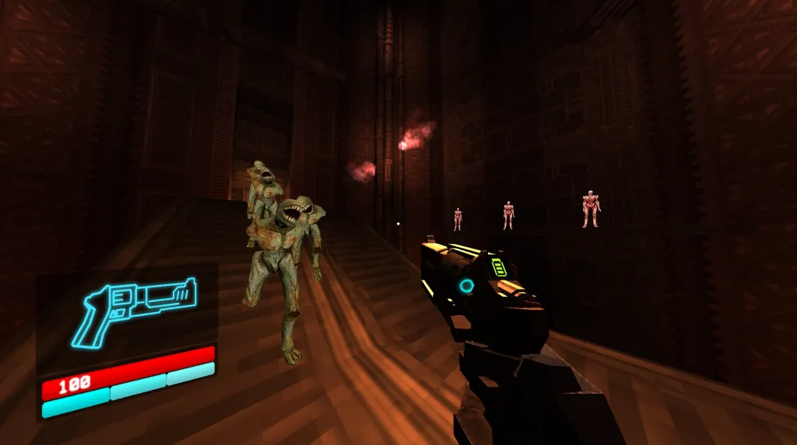
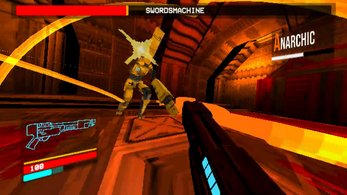
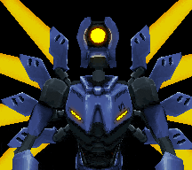

ULTRAKILLULTRAKILL é um FPS old school frenético e ultraviolento inspirado em jogos clássicos como Quake e Doom. Em ultrakill, a humanidade durante uma guerra criou diversas maquínas que utilizavam sangue como combustível, a humanidade se estinguiu e as maquinas, em busca de mais combustível desceram ao inferno.
|

▶ Assistir trailer |
• GAMEPLAY •


• REVIEW •
Gráficos: Visual retrô, provavelmente inspirado em jogos de playstation 1.
História: Uma história meio confusa, mas muito interessante, vale a pena ir atras de entender ela.
Jogabilidade: EXTREMAMENTE FRENÉTICA, um dos jogos mais frenéticos da atualidade, sem falar na grande variedade de armas e os inimigos diversos.
Minha nota: 10/10 ♥
Prós e Contras
Prós:- Jogabilidade incrível, soundtracks melhores aindas, construção de level impecável e uma história muito boa.
Contras:
- As fases são muito caóticas, então pode ser dificil para novos jogadores se acostumarem.
• Ordem das fases •
o jogo é dividido em 6 partes (até o momento).- Prelude
- Lust
- Gluttony
- Greed
- Wrath
- Heresy
• Curiosidades e Dicas •
- Minos e Sísifo (respectivos chefões) eram "cascas" especiais: A maioria dos humanos que morre no Inferno se transforma em cascas (husks) sem muita vontade ou inteligência. No entanto, almas com grande força de vontade, como o Rei Minos e Sísifo, conseguiram manter a sua consciência e o poder necessário para liderar rebeliões contra o Céu.
- O "Hakita" de pelúcia: Existe um museu de desenvolvimento no jogo onde você pode encontrar uma pelúcia do criador, Hakita. A comunidade criou uma speedrun apelidada de "HakitaBlowjob%" que consiste em usar o gancho (Whiplash) para puxar a pelúcia e jogar moedas no chão com a física alinhada, criando um efeito humorístico.
- Enfrentando o V2 em segundos: Você pode derrotar o robô V2 em 3 segundos usando o "coin punch". Isso envolve dar vários socos seguidos na mesma moeda lançada no ar contra ele, o que multiplica o dano a cada golpe e o destrói antes mesmo de a sua animação inicial terminar.
♫ Soundtracks ♫
| Unstoppable force |
|---|
| Deep blue |
| The world looks red |
• LINKS •
Página de fã feita por um jogador de ULTRAKILL ©
